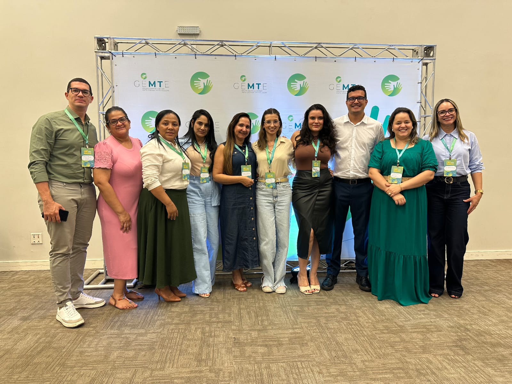
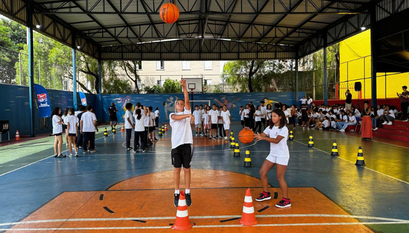
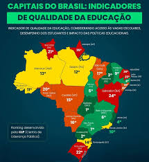

Suspiro
News
EDUCAÇÃO
Aqui você acompanha notícias, projetos e informações sobre educação no Brasil e no mundo
 crnbrasil
crnbrasilMenina de 4 anos brilha na matemática
Com apenas 4 anos, a brasileira Pietra Garcia conquistou medalha de bronze na Olimpíada Internacional Smeta, chamando atenção pelo talento precoce em matemática e raciocínio lógico. A história da pequena prodígio tem impressionado educadores e curiosos.

Educadores de Rondonópolis no encontro promovido pelo Grupo Empreendedor Mato Grosso em Evolução (GEMTE)Rondonópolis apresenta projetos educacionais
A Secretaria Municipal de Educação de Rondonópolis apresentou projetos inovadores em um encontro educacional em Cuiabá. Entre as iniciativas estão Salas Multissensoriais e um novo sistema de avaliação que busca melhorar a aprendizagem nas escolas públicas.
.jpeg) unicamp
unicamp Aprovados da rede municipal quadruplicam
O número de alunos da rede municipal de São Paulo aprovados em universidades públicas pelo Provão Paulista Seriado saltou de 16 para 69 em 2025. O crescimento mostra o avanço de políticas educacionais que ampliam o acesso ao ensino superior.
Estudante faz Enem no hospital e passa em Medicina
Mesmo enfrentando um tratamento contra Anemia aplásica, o estudante Ítalo Cantanhede Rodrigues fez o Enem no hospital e conquistou aprovação em três universidades públicas de Medicina. A história de superação emocionou muita gente.

secretaria municipal de educaçãoOficinas de basquete chegam às escolas
Uma parceria entre a Secretaria Municipal de Educação de São Paulo e o programa Jr. NBA/Jr. WNBA in-School está levando oficinas de basquete para mais de 100 escolas da cidade, incentivando esporte e integração entre estudantes.

vaicairnoenemConfiança na educação pública cresce no Brasil
A confiança dos brasileiros nas escolas públicas cresceu 15 pontos percentuais entre 2022 e 2025, indicando avanços em infraestrutura, tecnologia e qualidade do ensino. Especialistas apontam que os investimentos começam a mostrar resultados positivos na educação do país
Sisu 2026 amplia chances na universidade
O Sisu 2026 trouxe uma mudança importante: agora é possível usar as notas das três últimas edições do Enem para concorrer a vagas em universidades públicas, ampliando as oportunidades de ingresso no ensino superior.
.jpeg) Rafael Barbosa de Brasilia
Rafael Barbosa de BrasiliaEnsino integral cresce no Brasil
O ensino em tempo integral atingiu 25,8% dos estudantes da rede pública, o maior índice da história do Brasil. O modelo oferece mais atividades educativas e ajuda a melhorar o aprendizado e reduzir a evasão escolar.